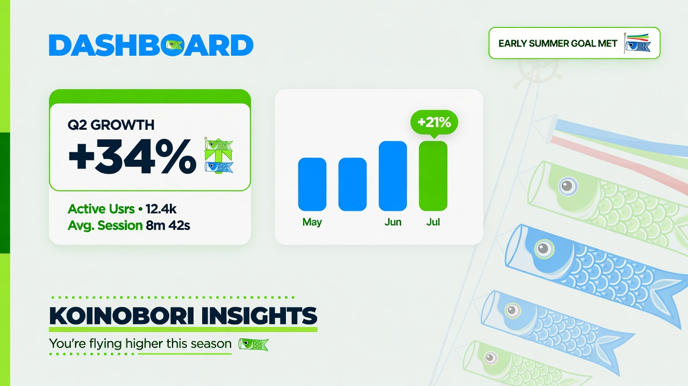
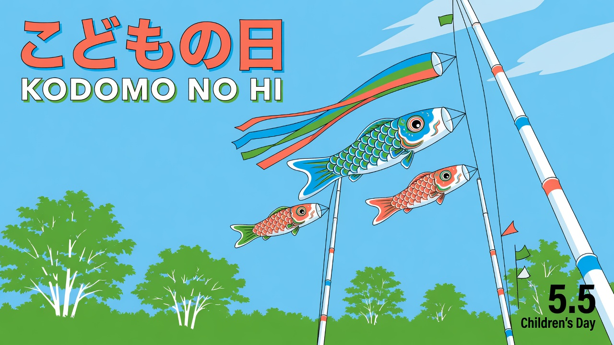

Koinobori helps families raise children who know their own strength. Start with the clearest day of the year.
Koinobori is not a party planner. It is a living calendar of rituals, stories and small daily challenges that turn ordinary seasons into a deliberate practice of courage.
Every May 5 we raise a new streamer as a family. The ritual marks the year the child steps into a new role — not a birthday, a becoming.
Between festivals, small challenges travel with the child. Ten minutes of courage a day. The journal records what the wind caught.
Next season the streamer is taller, the child older, the family stronger. The record is visible, beautiful and lasting.
Koinobori maps the year as a river. From the first small streamer to the climb at the waterfall, each child follows a visible path of courage, creativity and contribution.


The Koinobori Journal is not a scrapbook. Each entry is tied to a ritual, a challenge or a moment the family chose to mark. Beautiful enough to stay on the table all year.
Four movements. One year. The same flags, raised higher each time.
Choose and raise the family streamer together on May 5. The first act of the season.
Weekly prompts arrive with the wind. Ten-minute challenges that fit real life.
Write what happened in the shared journal. Photos, drawings, one-line truths.
Next May the child chooses a taller pole or a new color. The climb continues.
Thirty days free. Cancel any time before the first flag rises. Your first streamer is included.